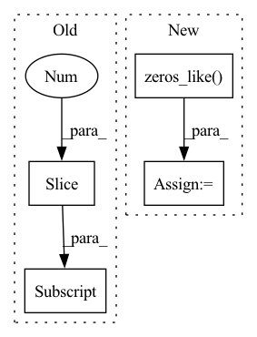

Pattern ID :5815

Before Change
shape = distogram.shape
n_bins = torch.ones(shape[-1] + 1) * min_t
n_bins[1:] = torch.tensor(bins)
// center - median
cum_dist = torch.cumsum(distogram, dim=-1)
central = torch.searchsorted(cum_dist, 0.5)
After Change
elif wide == "sqrt":
weights = (distogram * (bins - central.unsqueeze(-1))**2).sum(dim=-1).sqrt()
else:
weights = torch.zeros_like(central)
// rescale to 0-1. lower std / var --> weight=1
weights = 1 / (1+weights)
// TODO: rescale to 0-1?
return central, weights
In pattern: SUPERPATTERN
Frequency: 3
Non-data size: 4
Instances
Fragment ID: 20515592
Project Name: lucidrains/alphafold2
Commit Name: 5013886fc413e143b7f3341db644d320a11c3804
Time: 2021-01-14
Author: ericacaide1@gmail.com
File Name: utils.py
M Class Name: AnonimousClass
N Class Name: AnonimousClass
M Method Name: center_distogram_torch(5)
N Method Name: center_distogram_torch(3)
M Parent Class:
N Parent Class:
M File Name: utils.py
N File Name: utils.py
M Start Line: 119
M End Line: 130
N Start Line: 110
N End Line: 139
'>
Before Change
Convert zero-norm quat to (1, 0, 0, 0).
norms = torch.norm(self._rot, dim=-1, keepdim=True)
zero_mask = ((norms - 0.).abs() < 1e-6).repeat_interleave(4, dim=-1)
zero_mask[..., 1:] = False
self._rot[zero_mask] = 1.
@torch.no_grad()
def _normalize_quat(self):
After Change
Convert zero-norm quat to (1, 0, 0, 0).
with torch.no_grad():
norms = torch.norm(self._rot, p=2, dim=-1, keepdim=True)
new_rot = torch.zeros_like(self._rot)
new_rot[..., 0] = 1. // zero quat
valid_mask = (norms.abs() > 0.5).repeat_interleave(4, dim=-1)
self._rot = torch.where(valid_mask, self._rot, new_rot)
'>
Fragment ID: 20515584
Project Name: wuziyi616/multi_part_assembly
Commit Name: e5e6504436ab398ae772bdef17ae299b8a52aa24
Time: 2022-06-30
Author: dazitu616@gmail.com
File Name: multi_part_assembly/utils/rotation.py
M Class Name: Rotation3D
N Class Name: Rotation3D
M Method Name: _process_zero_quat(1)
N Method Name: _process_zero_quat(1)
M Parent Class:
N Parent Class:
M File Name: multi_part_assembly/utils/rotation.py
N File Name: multi_part_assembly/utils/rotation.py
M Start Line: 124
M End Line: 127
N Start Line: 123
N End Line: 128
'>
Before Change
h[i] = h_t
c[i] = c_t
hs.append(h_t.unsqueeze(1))
mb_feats = torch.cat(hs[1:], dim=1)
return mb_feats
def _run_regressor(self, mb_feats: Tensor) -> Tensor:
After Change
device = x_t.device
(_, c) = self._init_memory(batch_size, device)
mb_preds = []
y_t = torch.zeros_like(x_t)
for _ in range(self.horizon):
h_t = y_t
for i in range(self.depth):
(h_t, c_t) = self.decoder[i](h_t, (h[i], c[i]))
h[i] = h_t
c[i] = c_t
y_t = self.regressor(h_t)
if self.add_last_step_val is True:
y_t = y_t + x_t
mb_preds.append(y_t.unsqueeze(1))
return torch.cat(mb_preds, dim=1)
'>
Fragment ID: 20515589
Project Name: takuyashintate/tsts
Commit Name: 79fdf515a38d84e618bebff736a4cb088b3383c6
Time: 2021-08-27
Author: kmdbn2hs@gmail.com
File Name: tsts/models/seq2seq.py
M Class Name: Seq2Seq
N Class Name: Seq2Seq
M Method Name: _run_decoder(3)
N Method Name: _run_decoder(3)
M Parent Class: Module
N Parent Class: Module
M File Name: tsts/models/seq2seq.py
N File Name: tsts/models/seq2seq.py
M Start Line: 116
M End Line: 125
N Start Line: 123
N End Line: 135